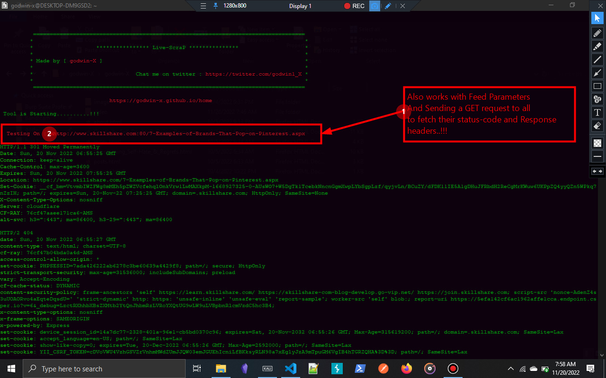

live-ScraP On collecting List Of Domains and fetching thier Response information

Live-scrap.sh is a tool that helps to automate some boring stuff like,
if you have a list of sub-domains or domains attached with parameters and you want to test them to see those That.
are alive and dead once but testing the one by one on your browser will take decades if you have live 1000 domains to test ths whereour tool comes to play.
it helps to automate those sutff by just feed the list of the domains in the tool and it does the work for you then you wil use `grep`
to extract does with 200 status-code and you can also have the ability to see the response headers of any made
request.

Wants To Link Up To My Dms Its Very Easy Just Follow Your Best Of Choice Below ;
Email me At ; nzebunachigodwin@gmail.com
https://www.github.com/godwin-x